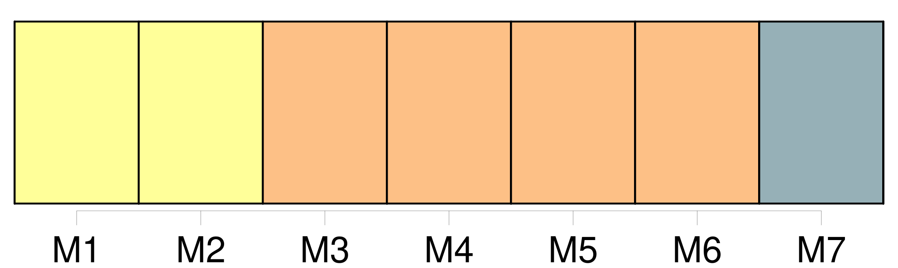
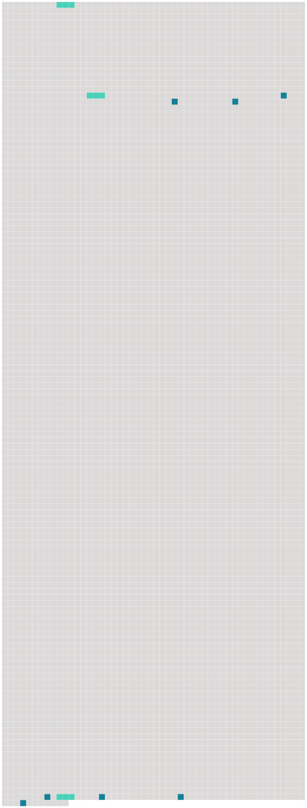

Longueur nb maillons : 10 mentions |
 |
Les jeudis qui suivirent, à la grande joie [des trois amis] , le jeu continua. [35 phrases] Dans cette grande sapinière où les chemins tracés étaient rares, [les trois amis] eurent la chance de ne pas être vus. À l'heure de midi, assis au bord de l'étang, les provisions posées sur l'herbe, [ils] faisaient trois parts.
Puis, alourdis de chaleur et de fatigue, bercés par le bruit soyeux et continu des grands sapins, étendus côte-à-côte, insouciants et confiants, [ils] s'endormaient.
Vers le milieu de septembre, [ils] durent cesser les jeux et les courses, le père Lumière restant à la maison pour la récolte de son verger et de son potager. [284 phrases]
Ils promettaient, mais à la façon dont [ils] partaient [tous les trois] on pouvait croire qu' [ils] feraient beaucoup de chemin avant de s'arrêter. Souvent mère Clarisse [les] accompagnait dans la sapinière. Assise bien à l'aise sur un tas de fougères sèches, elle cousait ou tricotait tandis qu' [ils] jouaient ou pêchaient dans l'étang. |
 |
Il est possible de télécharger la ressource sur la page Ortolang |
Si vous avez des questions ou vous voyez des erreurs, merci d'envoyer un mail à silvia.federzoni89@gmail.com |